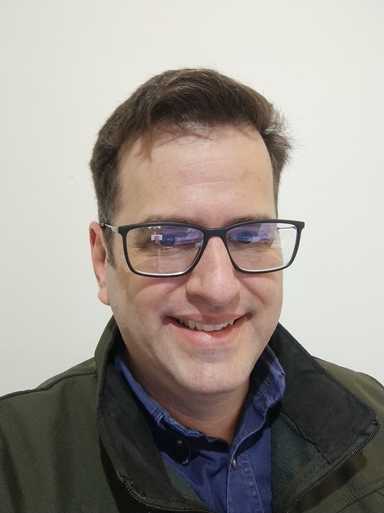

Aptitudes
Estas son algunas de las tecnologías de las que tengo conocimientos.


Cursos realizados
- Curso de Programación con C# Nivel 1 [Desde Cero]
- Curso de Programación con C# Nivel 2: POO + .NET + SQL

Mi nombre es Raul y estás viendo mi portfolio, vivo en Buenos Aires, Partido de San Martin, Villa Maipu, Argentina, puedo trabajar en campo, oficina, home office.
Ingeniero Electrónico con una sólida base técnica y una pasión por la tecnología, actualmente en proceso de expansión de mis habilidades hacia el mundo del desarrollo de software. Mi formación en ingeniería me ha proporcionado una excelente capacidad para la resolución de problemas, el pensamiento analítico y la atención al detalle, habilidades altamente transferibles al campo de la programación.
Actualmente, estoy cursando un posgrado en Gestión de Proyectos, lo que me permite comprender y aplicar metodologías ágiles y tradicionales en el desarrollo de proyectos tecnológicos. Además, soy estudiante de programación en la UTN Buenos Aires, donde estoy adquiriendo conocimientos en lenguajes y tecnologías de vanguardia.
Mi objetivo profesional es combinar mi experiencia en ingeniería electrónica con mis crecientes habilidades en programación para contribuir al desarrollo de soluciones innovadoras y eficientes. Estoy especialmente interesado en roles que me permitan aplicar mis conocimientos en áreas como:
Busco una oportunidad para crecer profesionalmente en un entorno dinámico y desafiante, donde pueda aplicar mis conocimientos y seguir aprendiendo.
Estas son algunas de las tecnologías de las que tengo conocimientos.